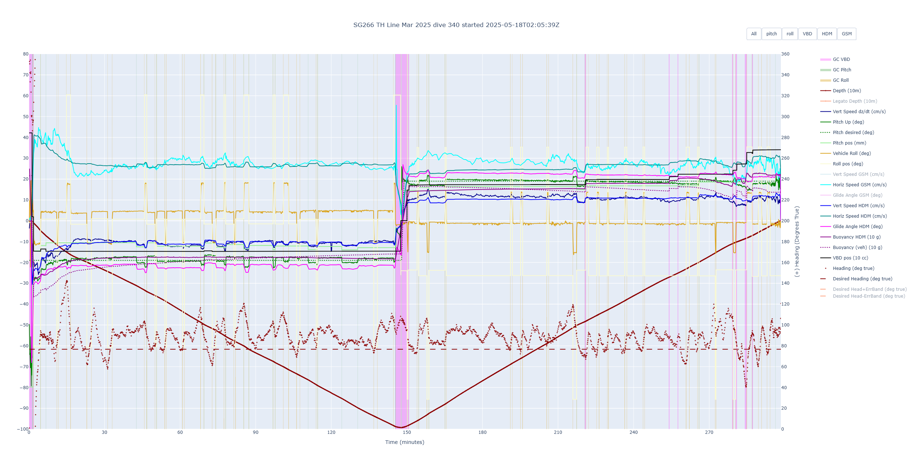
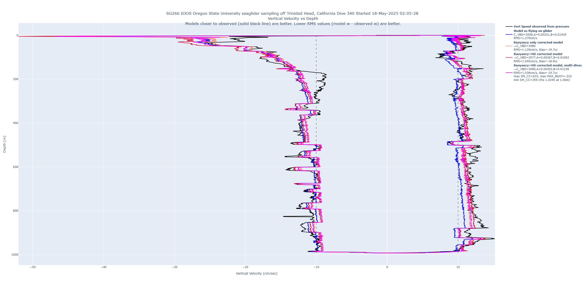
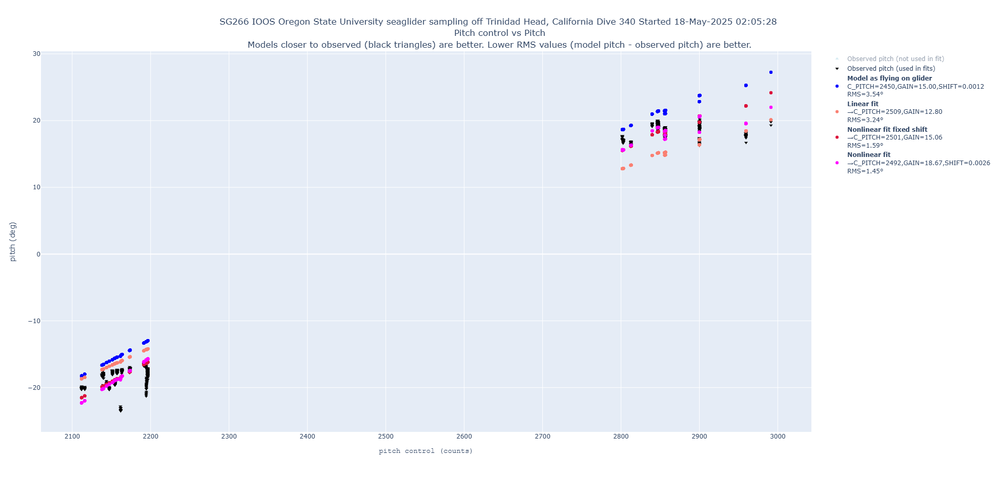
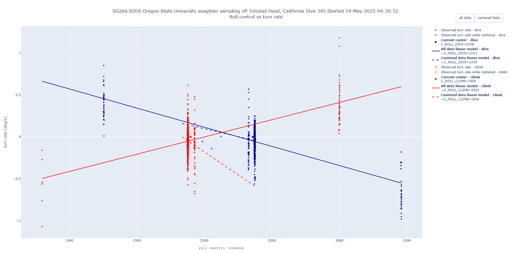
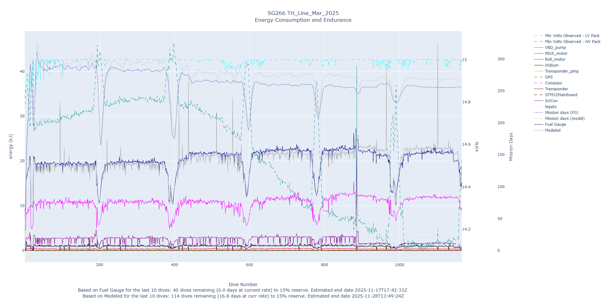
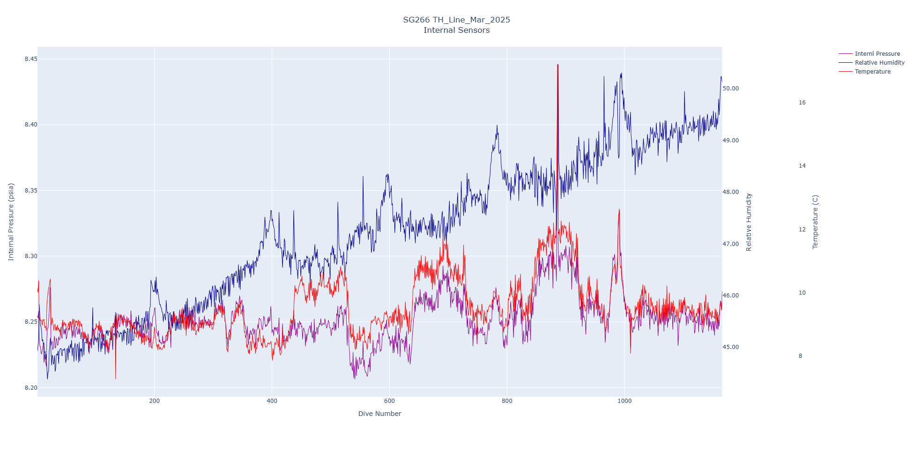
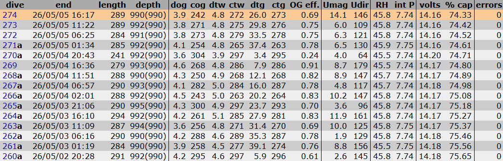

Piloting
General Piloting Tips
Dive Plots
Good dive profile: “V” shape dive. If something is out of whack, it will be very noticeable on this plot. A good thing to look for is that the heading (red + symbols) matches the desired heading (red dashed line). If that’s off look at the compass plot and roll plot.

VBD plot: Check that CC_surf_min is less than CC_SM. Look for a good box structure on the VBD plot. If it is close to or above CC_SM, adjust $SM_CC in the cmdfile.

Pitch plot: We want to see that the black line crosses at 0,0 denoted by the red +. C_Pitch is shown on the figure, as well as the Implied Pitch Center. C_Pitch should be close to the Implied Pitch Center, however when making adjustments, adjust $C_PITCH halfway to the Implied Pitch Center and keep working your way to the implied value until it is crossing the red +.

Roll plot: There are two lines on this graph, one for dive and one for climb. We want both of these lines to go through the black +. Similar to the pitch plot, there are our actual center values and implied center values. Adjust halfway until satisfactory.

Energy plots: Watch for something draining too much power. You’ll see the consumption for something be much higher than normal.

Humidity & Pressure plot: 50-60 Humidity is good, 8-9 Pressure is good. Just make sure that nothing changes dramatically.

Dive Table
Depth and Time: Make sure the length of time and depth match what you expect.
Distances and Targets: DOG (distance over ground) – this is the distance you covered from start to finish on a dive. COG (course over ground) – this is the direction of travel from start to finish on a dive. DTW (distance to waypoint) – whether flying by heading or by targets, waypoints will be automatically set at a certain distance away from the start. CTW (course to waypoint) – direction of travel to the waypoint. DTG (distance to target) – the distance to the target that is set. When flying by targets, it will be the next target; when flying by heading, it will be roughly 20 km. CTG (course to target) – direction to the next target.
Current: Umag (current magnitude) and Udir (current direction). Watch these numbers to see if the current is potentially pushing the glider around.
Batteries: Watch the battery voltages as well as the energy consumption and capacity. Fluctuating voltages might indicate a battery issue.

Inshore TH Line Piloting
When piloting inshore, we want to get the most out of our dives as possible. This means getting as close to the bottom as we can while at the same time conserving battery usage by only setting the altimeter on as we need it. This means that once we get to the 1000 m isobath, you need to be paying closer attention to each dive and planning your next moves.
Tips:
Plan a dive ahead. Oftentimes you are making changes to the cmdfile right after the glider has surfaced and dove, so you will be waiting until the next surfacing for the glider to receive your changed cmdfile. Once it has received it, then it will proceed to dive under the changes you made.
Set $ALTIM_PING_DEPTH 100-200 m above the estimated bottom depth. When setting $ALTIM_PING_DEPTH, you should keep in mind that the glider dives in a V-pattern. The bottom depth at the point where the glider surfaces does not reflect the bottom depth at the point of apogee. Using OpenCPN or other bathymetry software, estimate the bottom depth at the next apogee point and use that as the reference to set $ALTIM_PING_DEPTH.
For example, if I estimate the bottom depth at the next apogee point to be 750 m, I will set it to $ALTIM_PING_DEPTH, 500.
Another reason we set the altimeter to start pinging 100-200 m above the bottom and not constantly is because the altimeter can pick up false readings during the dive phase and prematurely initiate apogee, thus not giving us a complete dive profile.
Pay attention to the current. The current will very likely pick up speed closer to shore, so make sure to take that into account when setting the $ALTIM_PING_DEPTH. It’s possible the glider could be swept into shallower depths and risk hitting the bottom before the altimeter turns on.
Watch the time between dives. As you get shallower, the time between dives will continue to shorten. Around 1000 m, you will have ~5 hrs between dives; around 200 m, you will have <1 hr between dives.
Turn it around at 150-250 m bottom depth. Once the glider starts having dives in the low 200 m range, you can go ahead and turn it around by creating a pdoscmds.bat file with the contents “target oTrH35” to go to TH35, for example. To view target names, read the “targets_TrH14” file. OTRH refers to outbound, iTRH refers to inboard. For instance, if turning the glider inshore the pdoscmds.bat might say “target iTrH175” so that the glider flies to the target at 175.
Fly by heading adjusted in cmdfile. To fly by heading, change the $HEADING parameter in the cmdfile to your desired course. To change it back to targets, change $HEADING to -1 and create a pdoscmds.bat file with the desired target.
FAQ’s
What happens if I forgot to change $ALTIM_PING_DEPTH and it’s set deeper than the estimated bottom depth?
The glider has a built-in bathymetry map that it follows in addition to using the on-board altimeter. If the altimeter is turned on, the glider will wait for one of two things to happen: 1) The altimeter pings the bottom, or 2) The bathymetry map knows that it is close to the bottom. If the altimeter isn’t sensing the bottom, but the bathymetry shows that the glider is close, then the glider will initiate apogee and begin climbing. So, if $ALTIM_PING_DEPTH is set wrong, it will likely not hit the bottom.
What if the glider does hit the bottom and what does that look like from a piloting standpoint?
The glider is traveling slow (~25 cm/s) so any hit to the bottom would be a soft landing. We don’t really need to worry about it damaging the glider but rather we do worry about it getting stuck in random junk on the bottom. If it gets caught in a net or something, it won’t be able to climb back to the surface.
A glider hitting the bottom will look like a hockey stick. The depth will have the normal dive shape, but then flatten out and not form the classic “V” dive shape. Notice how the “W” vertical speed (solid blue line) goes to “0” indicating no vertical motion. Similarly with the horizontal speed (solid cyan line), notice how it hovers around 0, indicating very little horizontal motion. When it hits the bottom, it will wait there until the dive time reaches half of $T_MISSION (desired time in minutes for mission), then initiate apogee and start climbing. So, if it does hit the bottom in shallow water (~100 m), expect the dive to take longer because it will stay on the bottom until ½ of $T_MISSION.